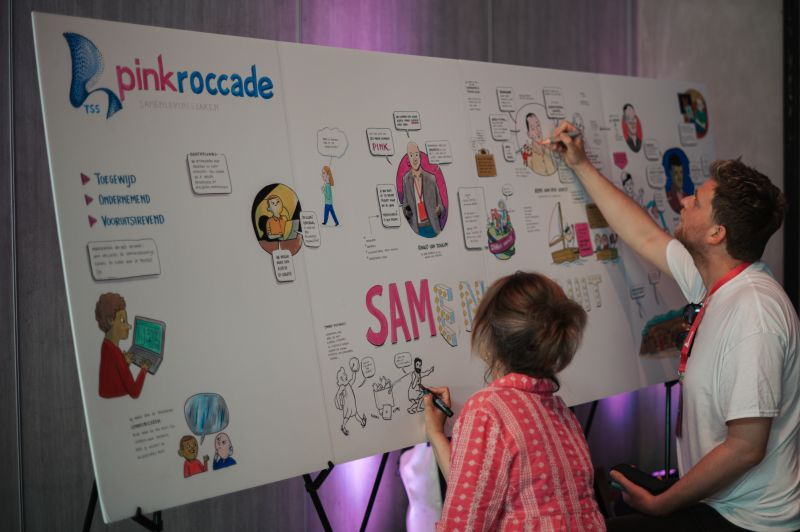
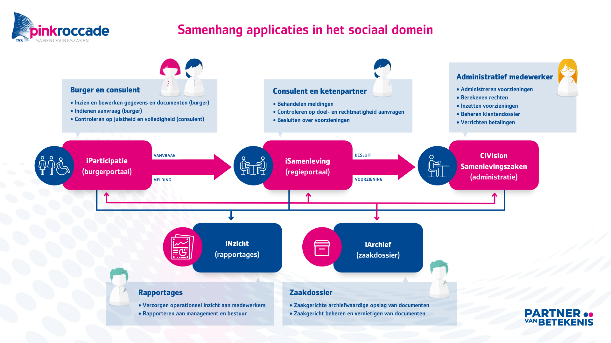
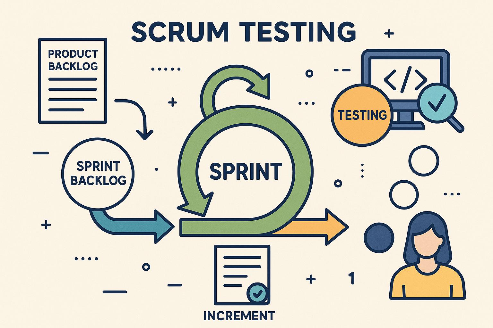

PinkRoccade is a leading IT service provider specializing in innovative software solutions for public sector organizations across the Netherlands. With a strong commitment to digital transformation, PinkRoccade supports clients in improving efficiency, transparency, and citizen services through tailored technology.
PinkRoccade Local Government focuses specifically on delivering software and IT services to municipalities and local authorities, helping them streamline administrative processes and enhance public service delivery with reliable, scalable solutions designed for the unique needs of local governments.
Product
iSuite, also known as Sociaal Portaal, is PinkRoccade Local Government’s advanced software platform designed to support municipalities in managing social services and welfare programs. The solution offers a fully integrated environment for case management, client registration, and process automation, enabling local governments to efficiently handle complex social care workflows. With built-in tools for data analysis, reporting, and citizen communication, iSuite helps improve transparency, compliance, and the overall quality of social service delivery, empowering municipalities to better meet the needs of their communities.
Assignment
Situation
PinkRoccade has several software development teams, each responsible for different parts of the iSuite software platform and its dependencies. One of these teams focuses on building the platform’s core functionality — including authentication, routing, and a major portion of the case management system used by municipalities.
The iSuite platform is designed to replace the legacy software currently used by most municipalities. Its primary goal is to reimplement all existing features within a modern technology stack, resulting in significant gains in performance, scalability, and maintainability. In addition, the transition marks a major shift from on-premise software to a SaaS-based solution.
The iSuite development team is entirely new and has little to no prior experience with the legacy software suite. As a result, the creation of the iSuite platform is a genuine grassroots development effort. Rather than simply replicating existing systems, the team takes a critical look at previous solutions, reevaluating them and designing new approaches to meet evolving market demands for performance, efficiency, and simplicity.


Task
When I first joined the iSuite team, my primary role as a junior software engineer was to implement core functionality for the platform. Within my first year, I earned a Software Architecture certificate from Vijfhart and became involved in designing the architecture for new applications within the iSuite ecosystem.
During this period, I took on a key responsibility for developing and managing the APIs that underpin the iSuite platform’s functionality. My main focus was on streamlining these APIs and creating shared components to improve maintainability and consistency across the system. This work required extensive collaboration with other teams and stakeholders to ensure that critical data and functionality were effectively integrated across the broader PinkRoccade Local Government infrastructure.
As collaboration with other teams intensified, I naturally began taking on a broader role that extended beyond software development. I became increasingly focused on identifying and removing impediments that slowed API development, ensuring that my team could maintain steady progress. In parallel, I took an active part in managing priorities and aligning development efforts with stakeholder needs to maximize our overall velocity and output. This required a strong balance between technical insight, communication, and coordination across multiple teams within the wider iSuite and PinkRoccade ecosystem.
To build on these growing responsibilities, I decided to formally develop my leadership and process management skills by earning the Professional Scrum Master (PSM I) certification from Vijfhart. Equipped with this knowledge, I officially stepped into the role of Scrum Master for my team while continuing to lead API architecture, development, and maintenance. In this combined role, I worked to foster a collaborative and transparent team environment, guided sprint planning and retrospectives, and ensured that both the technical and procedural aspects of our work contributed to the long-term success and scalability of the iSuite platform.
Result
As part of my contributions to the iSuite platform, I have designed and implemented numerous APIs that connect the platform to peripheral applications and third-party clients. In addition to developing new interfaces, I have also refined and streamlined existing APIs, helping to establish a cohesive and well-structured integration landscape. This approach has significantly improved the maintainability and scalability of the platform, making it easier to extend with new functionality as business and market needs evolve.
Beyond my primary focus on API infrastructure, I have also played an active role in developing the platform’s core functionality. This includes creating new application pages, optimizing performance for large-scale data visualization, and enhancing the security mechanisms within these applications.
Alongside my role as a software engineer, I have had a significant influence on the team’s development process through my position as Scrum Master. My primary objective in this role was to prepare the team for major customer releases while streamlining our development efforts to ensure that the delivery of new functionality became more predictable, consistent, and aligned with release schedules. By fostering better collaboration and implementing structured sprint planning, I helped the team gain greater control over its development flow and priorities.
One of the key achievements during my time as Scrum Master was the successful integration of the Quality Assurance (QA) team into our sprint process, allowing for earlier and more effective testing cycles. Additionally, I worked on establishing a clear and measurable team velocity, providing valuable insights into our development capacity and improving long-term planning accuracy. These initiatives not only enhanced our delivery predictability but also strengthened the overall efficiency and cohesion of the development team.
Tools and Methods

Programming Languages
Throughout my time contributing to the development of the iSuite platform, I have primarily focused on coding in C#, implementing new features and enhancements for the platform’s APIs. This work involved designing efficient, maintainable, and scalable backend solutions that supported the growing needs of both the iSuite ecosystem and its integrations with external systems.
Whenever API development tasks were completed or temporarily on hold, I also contributed to the Blazor front-end components of the iSuite platform, helping to build and refine user-facing functionality and core application pages. In addition to my work on the application layer, I developed extensive knowledge of PostgreSQL, particularly in areas such as data modeling, performance optimization, and query tuning. This combination of backend, frontend, and database expertise has allowed me to contribute effectively across multiple layers of the iSuite architecture.
Development Methods
During the development of the iSuite platform, we worked extensively within a Scrum and Agile framework to manage and guide our development process. This approach allowed the team to adapt quickly to changing priorities, deliver value iteratively, and maintain clear communication across all stakeholders.
In my role as Scrum Master, I played a key part in facilitating the effective use of Scrum principles within the team. I organized and led daily stand-ups, refinement sessions, sprint planning meetings, and retrospectives, ensuring that each ceremony added real value to the team’s workflow. By fostering transparency, encouraging collaboration, and promoting continuous improvement, I helped the team maintain focus, momentum, and alignment with our broader project goals.